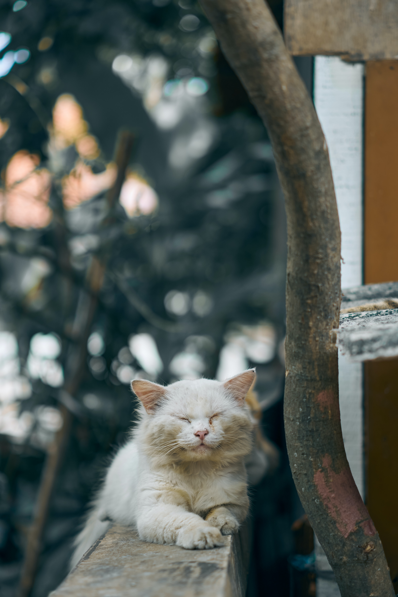

Gambar Kucing Lucu
Ekspresi wajah kucing, terutama mata besar dan bulu lembut, dapat memberikan kesan lucu dan menggemaskan. Mata mereka yang besar dan tajam juga dapat menciptakan ekspresi yang lucu saat mereka terkejut, penasaran, atau bahkan tidur.


